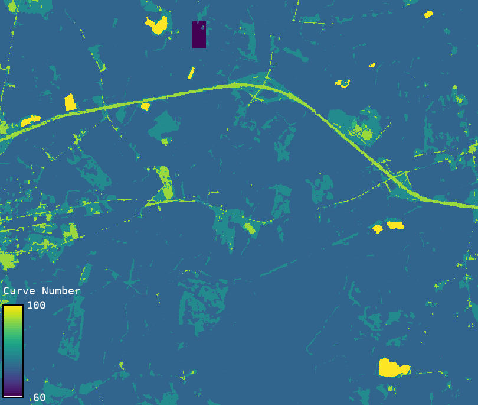

Generates a Curve Number (CN) raster using landcover and hydrologic soil group (HSG) rasters, along with user-specified hydrologic condition and antecedent runoff condition.
Select the source of the landcover classification and corresponding lookup table:
For custom, the CSV must include the following columns:lc,hsg,hc,cn
The HSG raster must contain only:
Curve Number increases from HSG A to D due to reduced infiltration associated with increasing clay content and compaction.
Dual hydrologic soil groups (A/D, B/D, C/D) represent soils that behave differently depending on drainage. By default, the undrained (second) group is used (e.g., A/D → D). Use the -d flag to use the drained (first) group instead (e.g., A/D → A).
When the soil raster contains null values but a valid landcover value exists, the module falls back to HSG D (the most conservative group with highest runoff potential).
If you are using SSURGO soil data, Hydrologic Soil Group (HSG) values are typically provided directly. For other soil datasets that do not include HSG classifications, see Reference 1 (Chapter 7) for guidance on assigning HSGs based on soil texture, hydraulic conductivity, and water table depth. This information can be used to develop a custom HSG raster.
Hydrologic condition reflects the percentage of surface groundcover and affects runoff potential. Generally:
Curve Number decreases from poor to good due to improved infiltration with more vegetation.
See Reference 2 for further discussion.
Note: Curve Number for Cropland under fair hydrologic condition is provided as the average of the Curve Numbers for poor and good conditions.
The variability in Curve Number (CN) arises from factors such as rainfall intensity and duration, total precipitation, soil moisture conditions, vegetative cover density, growth stage, and temperature. These factors collectively define the Antecedent Runoff Condition (ARC), which is classified into three categories:
Curve Number increases from ARC I to ARC III as runoff potential rises.
A standard conversion table is used within the script to adjust CN values from ARC II to ARC I or ARC III, based on empirical relationships. This corresponds to Table 10-1 in Reference 3.
The CN is more sensitive to ARC than to HC.
Typical curve number values for a soil-cover complex follow this order:
p_iii > f_iii > g_iii > p_ii > f_ii > g_ii > p_i > f_i > g_iWhere:
p, f, g denote poor, fair, and good hydrologic conditionsi, ii, iii denote dry, average, and wet antecedent runoff conditions# Example 1: NLCD lookup (built-in)
r.curvenumber \
landcover=nlcd \
hsg=soil_hsg \
landcover_source=nlcd \
h_c=poor \
arc=iii \
output=cn_nlcd
# Example 2: ESA WorldCover lookup (built-in)
r.curvenumber \
landcover=esa \
hsg=soil_hsg \
landcover_source=esa \
h_c=fair \
arc=ii \
output=cn_esa
# Example 3: Custom CSV lookup
r.curvenumber \
landcover=custom_lc_map \
soil=custom_hsg_map \
landcover_source=custom \
lookup=cn_table.csv \
h_c=good \
arc=i \
output=cn_custom

Figure: Example output from r.curvenumber
Abdullah Azzam (HydroCS, Department of Civil and Environmental Engineering, New Mexico State University)